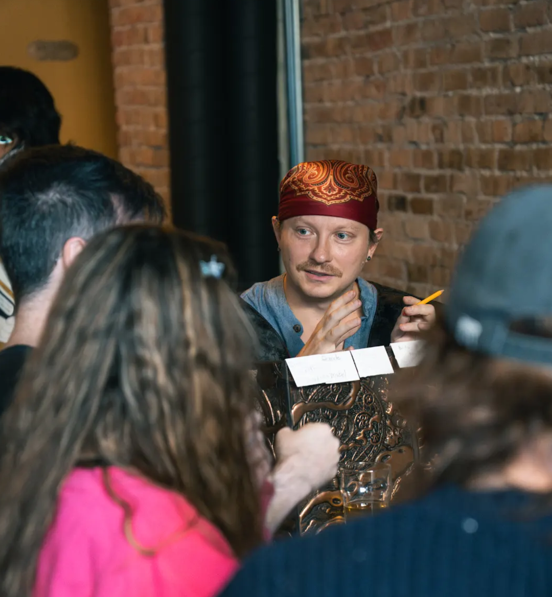

Hello there,
I'm Tyler!
I have had a love for tabletop role playing games since middle school when my cousin and I would play the third edition of Dungeons and Dragons on my grandmother's floor after school. I went on to be the "forever DM" for my friends through high school, and into college - learning new systems and picking up tricks along the way. Later, I accepted a job in the video game industry to work on a narrative-focused comedy game called High on Life (you'll find that I like to weave humor into the stories I tell 😉). I also love to paint miniatures, especially for the characters in my stories. I believe strongly in an analog approach, and the power of cooperative storytelling to create memories and forge friendships. Check out the kind words that some of my past players have said about my games below!

Testimonials
I got to experience Dungeons & Dragons with a wily, good-humored Dungeon Maestro. Almost all the participants came alone to play, yet everyone who joined this table's party was giggling up a storm and making new friends before the night ended. This DM ran a very smooth game with unexpected and humorous outcomes while keeping the energy both fun and safe. The use of imaginative storytelling combined with funny voices really helps make the game come to life. All questions about how to play where answered fully and without judgment. - Alexandra
This is one of the best Dungeon Masters I have ever encountered. He's friendly, outgoing, imaginative, and knows the game so incredibly well. He is inclusive and is great for both rookies and experienced players alike. 10/10 would play again! Thank you for the great game Tyler! - David
Tyler was a great DM. We had a large table with a few newbies, but he managed to keep us on track and tracking toward our goals. The quest was creative and fun, he explained some safety tools, and did a wonderful job painting a magical world for us to bounce around in. - Chris